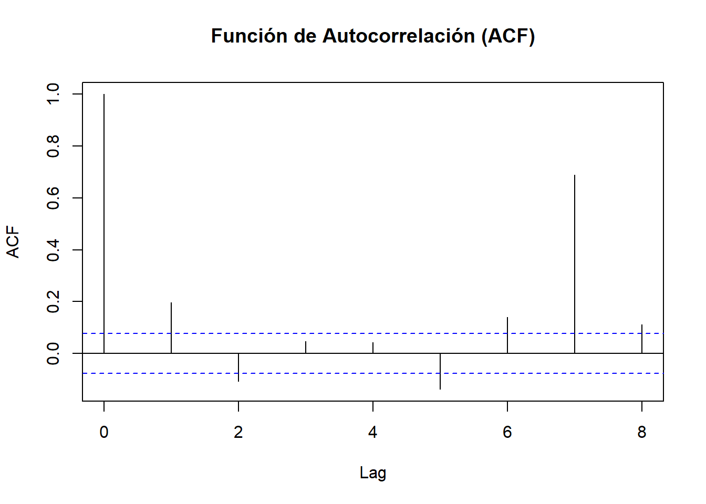
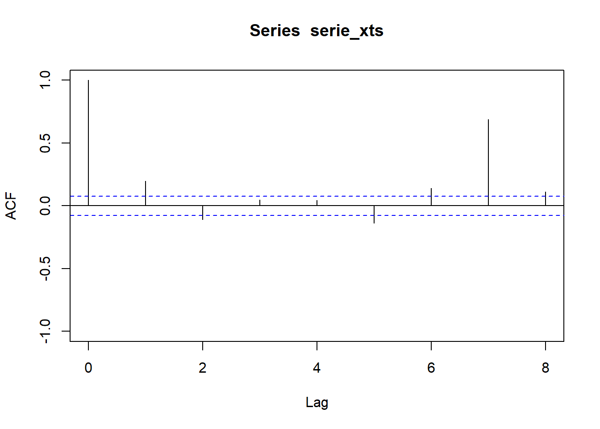
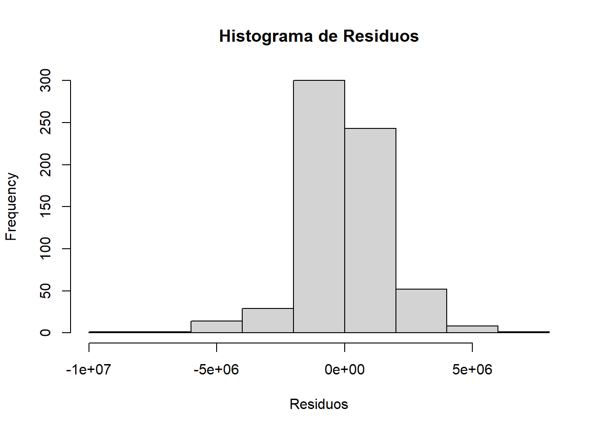

3 PREPROCESAMIENTO Y VISUALIZACION
3.1 Descomposición de la serie temporal - Serie de tiempo por Fecha de Pago
3.1.1 Estacionariedad
En el primer paso se verifica que la serie sea estacionaria a traves de la prueba Dickey-Fuller Aumentada (ADF).
##
## Augmented Dickey-Fuller Test
##
## data: serie_xts
## Dickey-Fuller = -7.4395, Lag order = 8, p-value = 0.01
## alternative hypothesis: stationaryEl resultado de la prueba Dickey-Fuller Aumentada (ADF) tiene un p-valor de 0.01, lo cual indica que la serie es estacionaria por lo cual no requiere realizar una diferenciación en la serie.
Estadístico de Dickey-Fuller = -7.4: Este es el valor calculado para el estadístico de prueba. Un valor más negativo tiende a indicar estacionariedad, ya que refuerza el rechazo de la hipótesis nula de no estacionariedad.
p-value = 0.01: Este p-valor es bajo (generalmente menor a 0.05 es un umbral común para significancia). Dado que el p-valor es 0.01, puedes rechazar la hipótesis nula de no estacionariedad con un 99% de confianza. Esto significa que hay una fuerte evidencia de que tu serie es estacionaria.
Alternative hypothesis: stationary: La hipótesis alternativa de la prueba es que la serie es estacionaria. Dado que el p-valor es bajo, este resultado respalda la hipótesis alternativa, indicando estacionariedad.
En resumen, se puede concluir concluir que la serie es estacionaria con un nivel de confianza alto. Esto significa que sus propiedades estadísticas, como la media y la varianza, se mantienen constantes a lo largo del tiempo, lo cual es un buen punto de partida para aplicar modelos de series de tiempo como ARIMA, que asumen estacionariedad.
3.2 Función de Autocorrelación (ACF) y Función de Autocorrelación Parcial (PACF)



A partir de estos gráficos podemos observar cómo los valores de la serie temporal están fuertemente correlacionados con sus propios valores, con valores altos en los rezagos 7 y 1, lo que significa que podria existir una relación directa y fuerte cada 7 días y con el día anterior, lo que podria sugerir un patón estacional semanal.
Dado estas observaciones se podria considerar un modelo con un componente AR de orden 1 y una estacionalidad de 7 periodos.
3.3 Componentes de la Descomposición


A partir de los gráficos anteriores se puede establecer que la serie tiene una tendencia creciente que sugiere un aumento en el valor de las remesas en dólares a lo largo del tiempo.
La estacionalidad es clara y repetitiva, lo que indica un patrón cíclico que se mantiene constante en intensidad y el residuo muestra variaciones adicionales, algunas de las cuales pueden corresponder a eventos aleatorios o no modelados.
3.4 Modelo ARIMA
A partir de la información anterior, se contruyó un modelo ARIMA con una estacionalidad de 7 periodos.
## Series: serie_xtsp
## ARIMA(1,0,0)(2,1,0)[7] with drift
##
## Coefficients:
## ar1 sar1 sar2 drift
## 0.2815 -0.6143 -0.3077 5326.433
## s.e. 0.0381 0.0377 0.0378 6623.015
##
## sigma^2 = 2.614e+12: log likelihood = -10088.61
## AIC=20187.21 AICc=20187.31 BIC=20209.54
##
## Training set error measures:
## ME RMSE MAE MPE MAPE MASE ACF1
## Training set -1837.392 1603135 1080672 -8.664026 21.83807 0.7725551 -0.03796145Modelo ARIMA(1,0,0)(2,1,0)[7] con drift
Coeficientes del Modelo Los coeficientes estimados del modelo son:
AR(1) = 0.2815: El coeficiente autorregresivo de primer orden indica que el valor actual de la serie está influenciado en un 28.15% por su valor anterior inmediato.
SAR(1) = -0.6143 y SAR(2) = -0.3077: Estos son los coeficientes de los componentes autorregresivos estacionales de primer y segundo orden, aplicados en ciclos de 7 periodos. Un valor negativo sugiere que existe una correlación inversa entre los valores actuales y los valores de hace 7 y 14 periodos, lo cual es típico de series con patrones estacionales donde los valores tienden a “compensarse” con valores de periodos anteriores.
Drift (Tendencia) = 5326.433: El drift indica una tendencia general en la serie hacia un crecimiento en promedio de 5326.433 unidades por periodo. La presencia de este valor significa que la serie presenta una tendencia al alza que no es capturada completamente por los componentes AR y SAR.
-Errores Estándar (s.e.): Cada coeficiente tiene un error estándar asociado, lo cual indica la precisión de la estimación. Errores estándar bajos (como los de este modelo) sugieren estimaciones confiables.
Medidas de Bondad de Ajuste
-sigma^2 = 2.614e+12: Es la varianza residual del modelo, una medida de la dispersión de los residuos. Cuanto más bajo es este valor, mejor es el ajuste del modelo.
-Log likelihood = -10088.61: Este es el logaritmo de la verosimilitud del modelo. Modelos con mayor (menos negativo) log-likelihood generalmente se ajustan mejor a los datos.
- AIC = 20187.21, AICc = 20187.31, BIC = 20209.54:
Estas son métricas de información que penalizan la complejidad del modelo. En general, valores más bajos de AIC y BIC sugieren un mejor equilibrio entre ajuste y simplicidad del modelo, en comparación con otros modelos.
Medidas de Error en el Conjunto de Entrenamiento
Estas medidas reflejan el error promedio del modelo en el conjunto de datos de entrenamiento:
-ME (Mean Error) = -1837.392: Un valor cercano a 0 indica que el modelo no tiene un sesgo significativo. En este caso, el error medio es bajo y negativo, lo que sugiere un ligero sesgo hacia subestimar los valores.
-RMSE (Root Mean Squared Error) = 1603135: Representa la magnitud promedio del error, penalizando más los errores grandes. Un valor más bajo indica un mejor ajuste del modelo.
-MAE (Mean Absolute Error) = 1080672: La media de los errores absolutos. Este es el error promedio sin considerar el signo del error, y sugiere el error medio absoluto del modelo.
-MPE (Mean Percentage Error) = -8.664%: El porcentaje de error medio muestra que el modelo, en promedio, subestima los valores en un 8.66%.
-MAPE (Mean Absolute Percentage Error) = 21.84%: Este valor indica que, en promedio, el modelo tiene un error del 21.84% respecto a los valores reales. Valores de MAPE menores al 20% suelen considerarse buenos, por lo que un 21.84% indica un ajuste razonable.
-MASE (Mean Absolute Scaled Error) = 0.7726: Este valor compara el MAE del modelo con el de un modelo naive (que asume que los valores actuales son iguales a los anteriores). Un valor menor a 1 indica que el modelo se desempeña mejor que el modelo naive.
-ACF1 = -0.03796: La autocorrelación en el primer desfase de los residuos es cercana a 0, lo cual sugiere que el modelo ha capturado bien la autocorrelación en la serie y que los residuos son, en gran medida, ruido blanco (es decir, no tienen patrones de autocorrelación significativos).
En general este modelo ARIMA(1,0,0)(2,1,0)[7] con drift tiene un ajuste razonable para la serie, los residuos muestran poca autocorrelación (ACF1 cercano a 0), lo cual es un buen indicio. La presencia de un componente de drift (tendencia) sugiere un aumento constante en la serie, que el modelo trata de capturar. Las métricas de error como el RMSE, MAPE y MASE son razonablemente bajas, lo cual sugiere un ajuste decente, aunque aún podría mejorarse para reducir el MAPE.
3.5 Punto de cambio de la serie de tiempo
## Created Using changepoint version 2.2.4
## Changepoint type : Change in mean
## Method of analysis : AMOC
## Test Statistic : Normal
## Type of penalty : MBIC with value, 19.4263
## Minimum Segment Length : 1
## Maximum no. of cpts : 1
## Changepoint Locations : 456Segn los resultados obtenidos, se detectó un punto de cambio en la serie de tiempo.
Changepoint type: Define el tipo de cambio detectado. En este caso, es un cambio en la media de la serie (
Change in mean), lo que implica que la funcióncpt.meanbuscó variaciones significativas en el nivel promedio de los datos.Method of analysis: AMOC: El método
AMOC(At Most One Change) implica que el análisis se ha limitado a identificar solo un posible cambio en la serie de tiempo.Test Statistic: Normal: La estadística de prueba utilizada para detectar el cambio es el test de normalidad, adecuado para datos que siguen una distribución normal.
Type of penalty: MBIC with value, 19.4263: La penalización aplicada es la
MBIC(Modified Bayesian Information Criterion), que ayuda a determinar la ubicación del cambio sin sobreajustar el modelo. El valor específico de esta penalización fue 19.4263, lo cual afecta el número de cambios detectados al favorecer soluciones con menos cambios.Minimum Segment Length: 1: Indica que la longitud mínima de un segmento entre los puntos de cambio es 1. Es decir, el análisis considera que el cambio puede ocurrir incluso en segmentos de un solo punto.
Maximum no. of cpts: 1: Se limitó el número máximo de puntos de cambio a 1, lo cual es consistente con el método
AMOCusado en el análisis.Changepoint Locations: 456: El único punto de cambio detectado se encuentra en la posición 456 de la serie de tiempo. Esto significa que se encontró un cambio significativo en la media en esa posición específica de la serie.
3.6 Predicciones del Modelo ARIMA
Como parte del ejercicio se realiza la predicción de 12 días.
## Point Forecast Lo 80 Hi 80 Lo 95 Hi 95
## 93.71429 9189632 7117496.1 11261768 6020573.7 12358690
## 93.85714 7602795 5450134.5 9755456 4310584.8 10895005
## 94.00000 2702625 543712.3 4861537 -599146.9 6004396
## 94.14286 9665693 7506285.8 11825100 6363164.8 12968221
## 94.28571 9868239 7708793.1 12027685 6565651.4 13170827
## 94.42857 9326637 7167187.8 11486086 6024044.4 12629230
## 94.57143 9242555 7083105.4 11402004 5939961.9 12545148
## 94.71429 9558880 7256181.8 11861579 6037206.8 13080554
## 94.85714 7797606 5483937.2 10111276 4259154.7 11336058
## 95.00000 2817606 503069.5 5132142 -722172.0 6357383
## 95.14286 9979586 7664980.6 12294190 6439702.8 13519468
## 95.28571 10440257 8125646.5 12754867 6900365.8 139801483.7 Validaciones
3.7.2 Supuestos de una ARIMA
3.7.2.1 Media cero de los residuos
##
## One Sample t-test
##
## data: residuals(modelo_arima)
## t = -0.029176, df = 648, p-value = 0.9767
## alternative hypothesis: true mean is not equal to 0
## 95 percent confidence interval:
## -125501.1 121826.3
## sample estimates:
## mean of x
## -1837.392Con este resultado se puede decir que no hay evidencia suficiente para rechazar la hipótesis nula de que la media de los residuos es 0.
3.7.2.2 Independencia de los residuos
##
## Box-Ljung test
##
## data: residuals(modelo_arima)
## X-squared = 23.707, df = 7, p-value = 0.001282La prueba de Ljung-Box evalúa si los residuos del modelo ARIMA están autocorrelacionados. Esto es importante porque, idealmente, los residuos deberían comportarse como ruido blanco para indicar que el modelo ha capturado adecuadamente la estructura de la serie de tiempo.
El p-valor es menor que 0.05, lo que sugiere que hay suficiente evidencia para rechazar la hipótesis nula de independencia de los residuos, indicando que los residuos del modelo aún presentan autocorrelación significativa en al menos uno de los primeros 7 rezagos.
El test de Ljung-Box sugiere que aún queda información estructural en los residuos que el modelo no ha capturado.
3.7.2.3 Normalidad de los residuos
##
## Shapiro-Wilk normality test
##
## data: residuals(modelo_arima)
## W = 0.9336, p-value < 2.2e-16
Gráfico Q-Q (Quantile-Quantile)
Un valor p menor que 0.05 indica que se rechaza la hipótesis nula de normalidad, por lo que los residuos no siguen una distribución normal.
Se debe buscar cual es la distribución de ajuste,se podría intentar una distribución t ya que es la más parecida visualmente tiene colas más pesadas que la normal, lo cual puede capturar mejor los valores extremos.